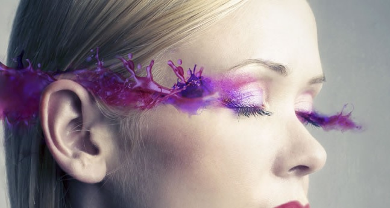
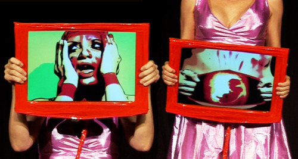
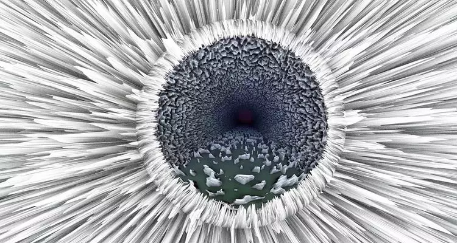
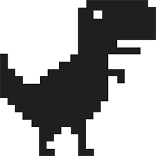
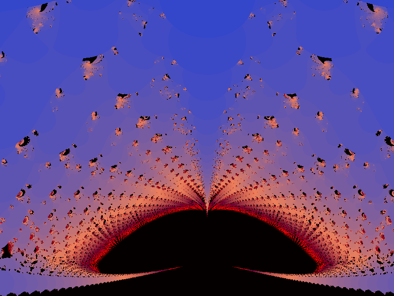
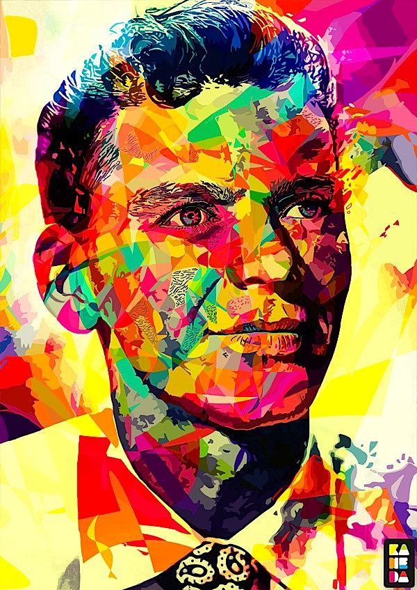

O uso de programas, a exemplo do popular Photoshop e tantos outros mais específicos permitem modificar imagens com a proposta de realçar ou ocultar detalhes, acrescentar elementos, mesclar e outros.
O avanço da internet permitiu que os artistas de áudio e vídeo pudessem expandir os seus trabalhos para uma quantidade maior de pessoas. As animações, interferências visuais, videodesign, pinturas e artes sonoras são alguns exemplos dessa expansão.
Um dos modelos de ciberart mais valorizado atualmente é o 3D, por ser uma arte que permite ao espectador maior aproximação com a realidade.
Esse tipo de arte digital é formado pela criação dos ícones de computador. Os ícones são pequenas imagens ou símbolos, clicadas em uma tela de computador ou de celular para acessar programas e aplicativos.
A arte fractal é constituída por imagens digitais acompanhadas de complexas equações matemáticas, que utilizam programas específicos para estes fins. Tais programas são dedicados as fórmulas descritas pela geometria fractal. As imagens fractais representam a auto repetição. Elas podem ser aumentadas ou diminuídas por várias vezes sem perder a forma original.
O desenho vetorial classifica as imagens que podem ser redimensionadas conforme a necessidade do artista ou programador. Isso é possível, pois os programas gráficos que permitem esse tipo de criação registram uma informação matemática para cada item desenhado.
